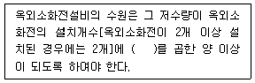
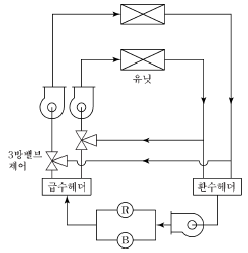
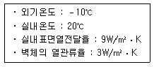
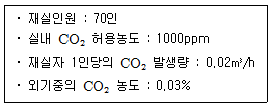
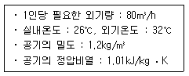
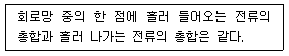
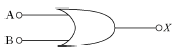
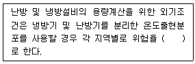

건축설비기사 (2014-05-25 기출문제)
1과목: 건축일반
1. 속빈콘크리트블록 A종(KS F 4002)의 가압면에 따른 압축강도는 얼마 이상으로 규정되어 있는가?
- 4MPa
- 6MPa
- 8MPa
- 10MPa
(정답률: 65%)

2. 학교 교실의 음 환경에 관한 설명으로 옳지 않은 것은?
- 교실과 복도의 접촉면이 큰 평면이 소음을 막는데 유리하다.
- 소리를 잘 듣기 위해서는 적당한 잔향시간이 필요하다.
- 운동장에서의 소음은 배치계획으로 이를 방지할 수 있다.
- 반자는 교실내의 음향이 조절될 수 있도록 설계되어야한다.
(정답률: 88%)
3. 백화점에 설치하는 에스컬레이터의 구배를 30°로 하고, 속도는 25m/min이며 폭이 60cm일 경우 1시간당 수송인원은? (단, 층고는 3m이며 매회 20명씩 탑승하는 것으로 본다.)
- 약 2,000 명
- 약 3,000 명
- 약 4,000 명
- 약 5,000 명
(정답률: 47%)
4. 층고가 4m인 박물관에 계단을 대체하여 경사로를 설치하고자 한다. 최소 몇 m의 수평거리가 필요한가?
- 18m
- 24m
- 32m
- 48m
(정답률: 78%)
5. 학교의 배치계획 중 분산병렬형에 대한 설명으로 옳지 않은 것은?
- 일종의 핑거 플랜이다.
- 화재 및 비상시에 불리하고 일조 ㆍ 통풍 등 환경조건이 불균등하다.
- 편복도로 할 경우 복도면적이 커지고 단조로워 유기적인 구성을 취하기가 어렵다.
- 넓은 부지가 필요하다.
(정답률: 89%)
6. 철근의 피복두께를 확보하기 위해서 사용되는 재료는?
- 컬럼밴드(column band)
- 세퍼레이터(separator)
- 폼타이(form tie)
- 스페이서(spacer)
(정답률: 81%)
7. 목조벽체의 구성부재와 가장 관계가 먼 것은?
- 인방
- 가새
- 동자기둥
- 샛기둥
(정답률: 58%)
8. 리조트 호텔(resort hotel)에 속하지 않는 것은?
- 클럽 하우스
- 터미널 호텔
- 온천호텔
- 산장 호텔
(정답률: 89%)
9. 사무소 공간계획 중 오피스 랜드스케이핑(office landscaping)방식의 장점이 아닌 것은?
- 공간의 절약이 가능하다.
- 변화하는 작업 형태에 대응하기 용이하다.
- 획일적 배치가 아니어서 인간관계 향상과 작업 능률에 도움을 준다.
- 시각적 문제, 소음 문제, 프라이버시가 보장된다.
(정답률: 89%)
10. 바닥충격음의 저감방법으로 옳지 않은 것은?
- 카펫, 발포비닐계 바닥재 등 유연한 바닥 마감재를 사용하여 피크 충격력을 작게 한다.
- 바닥 슬래브의 중량을 감소시켜 충격에 대한 바닥의 진동을 감소시킨다.
- 바닥 슬래브의 두께를 두껍게 하여 바닥 슬래브의 면밀도와 강성 모두를 높인다.
- 질량이 있는 구조체를 탄성재로 지지하는 공진계의 특성을 이용하여 진동전달을 줄인다.
(정답률: 89%)
11. 기둥의 전단력에 저항하여 좌굴 현상을 방지하는 철근은?
- 주근
- 늑근
- 띠철근
- 배력근
(정답률: 54%)
12. 커머셜 호텔(commercial hotel)계획에서 크게 고려하지 않아도 되는 것은?
- 프런트 오피스
- 발코니
- 레스토랑
- 연회장
(정답률: 92%)
13. 결로를 방지하기 위한 방법으로 옳지 않은 것은?
- 난방을 하여 건물내부의 표면온도를 노점온도 이하로 한다.
- 환기를 통해 습한 공기를 제거한다.
- 벽체 내부의 수증기압을 포화수증기압보다 작게 한다.
- 단열을 강화하여 구조체의 열손실을 줄인다.
(정답률: 85%)
14. 건축물의 용도별 수직교통량 예측 중 피크타임(peak time)이 발생하는 시점으로 옳지 않은 것은?
- 사무소 : 점심시간
- 공동주택 : 통학 및 통근시간
- 호텔 : 체크인(check-in)과 체크아웃(check-out) 시간
- 병원 : 면회 개시 시간
(정답률: 84%)
15. 건축공간의 모듈러 코디네이션(Modular coordination)에 대한 설명 중 옳지 않은 것은?
- 설계작업이 단순하고 간편하다.
- 상이한 형태의 집단을 이루는 경향이 많다.
- 대량생산이 용이하고 생산 비용이 낮아진다.
- 현장 작업이 단순해지고 공기가 단축된다.
(정답률: 89%)
16. 효율이 매우 좋고 휘도가 높으며 옥외의 광장 및 도로 조명 등에 주로 쓰이는 광원은?
- 수은등
- 고압 나트륨등
- 메탈 할라이드 램프
- 형광등
(정답률: 80%)
17. 목조 반자틀에 관한 설명으로 옳지 않은 것은?
- 반자틀은 보통 45cm 간격으로 수평으로 건너대고 여기에 직각으로 댄 반자틀 받이에 못박아 댄다.
- 달대는 거리간격 120cm 정도로 한다.
- 달대받이는 지붕틀의 평보, 또는 층보에 90cm 간격으로 걸쳐대고 큰 못 또는 꺽쇠치기로 한다.
- 반자틀 받이는 보통 120cm 간격으로 대고 달대받이에 매단다.
(정답률: 56%)
18. 외력에 대해 3차원적 저항을 하는 입체구조가 아닌것은?
- 절판 구조
- 라멘 구조
- 공기막 구조
- 입체트러스 구조
(정답률: 69%)
19. 이용자가 직접 자료를 찾아볼 수는 없으나 서가에와서 책의 표제를 볼 수 있으며, 직원에게 대출을 요구하는 도서관 출납시스템은?
- 자유개가식
- 안전개가식
- 반개가식
- 폐가식
(정답률: 67%)
20. 흡음에 관한 설명 중 옳지 않은 것은?
- 다공질 흡음재는 고음역에서는 유효하지만 저음역에서는 흡음효과가 적다.
- 흡음률 값은 0∼1.0 사이에서 변화한다.
- 흡음이란 음의 입사에너지가 열에너지로 변화하는 현상이다.
- 창, 문 등의 개구부를 개방했을 때 흡음률은 0이다.
(정답률: 58%)
2과목: 위생설비
21. 지상 15층 건물에 스프링클러설비를 하였다. 이 스프링클러설비용 펌프의 실양정이 60m 일 때 펌프의 전양정은? (단, 손실수두는 15mAq, 안전율은 15%로 계산)
- 60m
- 75m
- 90m
- 98m
(정답률: 35%)
22. 배수관 및 통기관의 관경을 정하고자 할 때 필요한인자가 아닌 것은?
- 트랩의 수량
- 통기관의 길이
- 기구배수부하단위
- 배수관의 배관구배
(정답률: 60%)
23. 동일한 관경의 관을 직선 연결할 때 사용되는 강관 이음쇠는?
- 유니온
- 크로스
- 벤드
- 플러그
(정답률: 87%)
24. 다음의 옥외소화전설비의 수원에 대한 설명 중( )안에 알맞은 내용은?

- 5m3
- 7m3
- 14m3
- 21m3
(정답률: 75%)
25. 배수용 트랩이 갖추어야 할 조건으로 옳지 않은 것은?
- 유효봉수깊이는 100∼150mm가 적절하다.
- 구조가 간단하고 오물이 정체하지 않아야 한다.
- 봉수가 확실하게 유지되고 재질은 내식성이어야 한다.
- 배수 등으로 내면을 씻어내리는 자기세정 작용을 해야 한다.
(정답률: 77%)
26. 배수관에 관한 설명으로 옳지 않은 것은?
- 기구의 트랩에서 배수수평지관까지의 관을 기구배수관이라 한다.
- 배수수직관에서 건물 외로 유도되는 수평관을 배수수 평주관이라 한다.
- 기구배수관과 합류하여 배수수직관에 접속하는 수평관을 배수수평지관이라 한다.
- 간접배수관이란 기구와 배수관을 직결시키지 않고 중간에 공간을 설치하는 것으로 트랩은 불필요하다.
(정답률: 68%)
27. 급탕설비에 관한 설명으로 옳지 않은 것은?
- 순환펌프의 양정은 2∼3 mAq가 적절하다.
- 환탕관의 관경은 급탕관의 관경보다 크게 한다.
- 급탕배관에서의 열손실량이 크면 순환펌프의 용량이 커진다.
- 순환펌프에 의한 순환수량을 적게 하려면, 급탕관과 환탕관간의 온도차를 크게 설계한다.
(정답률: 69%)
28. 급수설비에서 크로스 커넥션의 방지 대책으로 가장 알맞은 것은?
- 설비 내에 버큠 브레이커 및 역류방지 장치를 부착한다.
- 관내 유속을 억제하고, 설비 내에 써지 탱크(surge tank) 및 안전밸브를 설치한다.
- 배관 계통별로 색깔로 구분하여 오접합을 방지하며 통수시험에 의해 체크한다.
- 수평배관에는 공기나 오물이 정체하지 않도록 하며, 어쩔 수 없이 공기 정체가 일어나는 곳에는 공기빼기밸브를 설치한다.
(정답률: 84%)
29. 다음 중 펌프의 흡입 배관에서 발생하는 공동현상(Cavitation)을 방지하기 위한 대책으로 가장 알맞은 것은?
- 흡입양정을 증가시킨다.
- 흡입유체의 온도를 낮춘다.
- 흡입배관의 관경을 작게 한다.
- 흡입배관의 길이를 증가시킨다.
(정답률: 65%)
30. 가스계량기는 전기점멸기와 최소 얼마 이상의 거리를 유지하여야 하는가?
- 30cm
- 45cm
- 60cm
- 90cm
(정답률: 75%)
31. 다음의 급수방식 중 수질오염 가능성이 가장 높은 것은?
- 수도직결방식
- 고가탱크방식
- 압력탱크방식
- 탱크없는 부스터방식
(정답률: 81%)
32. 수질에 관한 설명으로 옳은 것은?
- SS값이 클수록 탁도가 작다.
- COD값이 클수록 오염도가 작다.
- BOD값이 클수록 오염도가 작다.
- BOD 제거율값이 클수록 처리능력이 양호하다.
(정답률: 82%)
33. 직경 100mm의 강관에 2.4m3/min의 물을 통과시킬때 강관내의 평균 유속은?
- 2.4 m/s
- 4.2 m/s
- 5.1 m/s
- 7.2 m/s
(정답률: 73%)
34. 양수량이 600L/min, 양정이 36m인 양수펌프의 축동력은? (단, 펌프의 효율은 70% 이다.)
- 4.5kW
- 5.0kW
- 6.4kW
- 7.1kW
(정답률: 80%)
35. 간접가열식 급탕방식에 대한 설명으로 옳은 것은?
- 고압용 보일러를 설치하여야 한다.
- 난방용 보일러의 열원을 이용할 수 있다.
- 저탕조에는 가열코일을 사용하지 않는다.
- 보일러에 새로운 물이 끊임없이 보급되므로 스케일 부착의 우려가 많다.
(정답률: 74%)
36. 다음 중 특수통기방식의 일종인 소벤트시스템에 사용되는 이음쇠는?
- 팽창관
- 섹스티아 벤드관
- 섹스티아 이음쇠
- 공기분리 이음쇠
(정답률: 79%)
37. 펌프직송방식에서 물의 공급 순서로 알맞은 것은?
- 상수도 － 저수조 － 펌프 － 위생기구
- 상수도 － 펌프 － 압력수조 － 위생기구
- 상수도 － 펌프 － 고가수조 － 위생기구
- 상수도 － 저수조 － 펌프 － 고가수조 － 위생기구
(정답률: 78%)
38. 4℃ 물을 100℃로 가열하였을 때 팽창한 체적의 비율은? (단, 4℃ 물의 밀도는 1kg/L, 100℃ 물의 밀도는 0.9586kg/L)
- 2.78 %
- 3.13 %
- 4.32 %
- 5.42 %
(정답률: 77%)
39. 2개 이상의 엘보를 사용하여 나사회전을 이용해서 배관의 신축을 흡수하는 조인트는?
- 스위브형
- 벨로즈형
- 슬리브형
- 루프형
(정답률: 81%)
40. 다음 중 급수관에서 수격작용의 발생 우려가 가장 높은 것은?
- 관의 분기
- 관경의 축소
- 관의 방향 전환
- 관내 유수의 급정지
(정답률: 86%)
3과목: 공기조화설비
41. 응축수 환수용으로 리프트 피팅을 사용하였을 경우 리프트 피팅(Lift fitting)은 얼마 정도의 흡상이 가능한가?
- 1.5m
- 2m
- 2.5m
- 3m
(정답률: 47%)
42. 개방식 배관의 펌프 흡입관 선단에 부착하여 펌프 운전 중에는 물론 펌프 정지 시에도 흡입관 내를 만수상태로 유지하기 위해 설치하는 것은?
- 관트랩
- 박스트랩
- 스트레이너
- 풋형 체크밸브
(정답률: 80%)
43. 다음 중 증기와 응축수 사이의 온도차를 이용하는 온도 조절식 증기트랩에 속하는 것은?
- 드럼 트랩
- 버킷 트랩
- 벨로즈 트랩
- 플로트 트랩
(정답률: 37%)
44. 다음 중 대기오염이 심한 지역에 가장 적합한 냉각탑은?
- 개방식
- 밀폐식
- 대기식
- 자연통풍식
(정답률: 84%)
45. 천장 취출구에서 취출을 하는 경우의 확산반경에 관한 설명으로 옳지 않은 것은?
- 인접한 취출구의 최소확산반경이 겹치면 편류현상이 생긴다.
- 최소확산반경 내에 보나 벽 등의 장애물이 있으면 편류현상이 발생하지 않는다.
- 거주영역에서 평균풍속이 0.1∼0.125m/s로 되는 최대 단면적의 반경을 최대확산반경이라 한다.
- 거주영역에서 평균풍속이 0.125∼0.25m/s로 되는 최대 단면적의 반경을 최소확산반경이라 한다.
(정답률: 68%)
46. 다음 설명에 알맞은 송풍기 풍량제어방식은? 비용이 많이 들지만 효율이 좋은 방식이며, 최근에는 인버터를 사용하여 전기의 주파수를 변화시키는 방식을 많이 사용한다.
- 가변 피치 제어
- 회전수에 의한 제어
- 흡입댐퍼에 의한 제어
- 토출댐퍼에 의한 제어
(정답률: 73%)
47. 다음 중 유효온도에 고려되어 있지 않은 요소는?
- 온도
- 습도
- 기류속도
- 복사열
(정답률: 66%)
48. 다음과 같이 열원의 출구온도는 일정하게 하고 부하변동에 따라 3방밸브로 바이패스에 의한 혼합비를 제어하고 2차펌프에 의해 부하측인 각 유닛으로 급수하는 부하기기의 출력제어방법은?

- 변유량 방식
- 정유량 방식
- 존펌프 방식
- 주펌프 방식5
(정답률: 58%)
49. 공기조화방식 중 전공기방식의 일반적인 특징으로 옳지 않은 것은?
- 공조실과 덕트 스페이스가 필요 없다.
- 실내에 배관으로 인한 누수의 염려가 없다.
- 실내공기의 오염이 적고, 중간기에 외기냉방이 가능하다.
- 냉 ㆍ 온풍의 운반에 필요한 팬의 소요동력이 냉 ㆍ 온수를 운반하는 펌프동력보다 많이 든다.
(정답률: 78%)
50. 냉각탑의 입출구에서 냉각수온도가 각각 tw1, tw2, 공기의 습구온도가 각각 t1, t2 일 때 어프로치(approach)는?
- tw1-t2
- tw2-t2
- tw1-t1
- tw2-t1
(정답률: 77%)
51. 덕트의 단면적을 확대시킬 경우 변화가 없는 것은? (단, 덕트의 마찰손실은 무시)
- 풍속
- 동압
- 정압
- 전압
(정답률: 63%)
52. 공기조화방식 중 변풍량 방식에 관한 설명으로 옳지 않은 것은?
- 변풍량 단일덕트 방식은 부하가 감소되더라도 실내공기의 오염은 없다.
- 변풍량 이중덕트 방식은 정풍량 이중덕트 방식보다 에너지 절감의 효과가 있다.
- 변풍량 유니트는 풍량제어 방식에 따라 바이패스형, 슬롯형, 유인형 등이 있다.
- 변풍량 단일덕트 방식은 취출구 1개 또는 여러 개에 변풍량 유니트를 설치하여 실온에 따라 취출풍량을 제어한다.
(정답률: 62%)
53. 다음의 송풍기 풍량제어방식 중 축동력이 가장 많이 소요되는 것은?
- 회전수제어
- 흡입댐퍼제어
- 흡입배인제어
- 토출댐퍼제어
(정답률: 74%)
54. 공기의 가습에 관한 설명으로 옳은 것은?
- 온수를 분사하면 공기온도는 올라간다.
- 스팀을 계속 분사하면 상대습도가 100%를 초과하게 된다.
- 초음파 가습기를 분무할 경우 공기온도는 변화하지 않는다.
- 공기온도와 같은 순환수의 가습은 공기의 엔탈피 변화가 거의 없다.
(정답률: 49%)
55. 다음과 같은 조건에 있는 벽체의 실내표면온도는?

- 9℃
- 10℃
- 12℃
- 13℃
(정답률: 63%)
56. 다음 중 원심펌프의 구경 결정에 가장 큰 영향을 끼치는 것은?
- 유량
- 양정
- 동력
- 비교 회전수
(정답률: 67%)
57. 배관의 유속에 관한 설명으로 옳지 않은 것은?
- 일반적으로 장치의 관내 권장 유속은 1∼3m/s 이다.
- 증기관에서는 유속이 너무 빠르면 응축수를 몰고 가서 수격작용을 일으킨다.
- 관내에 흐르는 유속을 높이면 관경을 가늘게 할 수 있어 공사비를 적게 할 수 있다.
- 관내에 흐르는 유속을 낮추면 배관 내 혼입된 공기를 충분히 밀어내어 공기 정체를 방지할 수 있다.
(정답률: 63%)
58. 어느 사무실이 다음과 같은 조건에 있을 때, 이 사무실에 요구되는 환기량은?

- 500 m3/h
- 1,000 m3/h
- 1,500 m3/h
- 2,000 m3/h
(정답률: 67%)
59. 기기나 배관 내의 유량조절을 빈번하게 하지 않고 일정량으로 고정시키는 경우에 사용되는 밸브는?
- 유니온
- 볼밸브
- 체크밸브
- 플러그 콕6
(정답률: 72%)
60. 다음과 같은 조건에서 재실인원이 50명인 회의실의 외기 현열부하는?

- 6270W
- 7240W
- 8080W
- 9120W
(정답률: 64%)
4과목: 소방 및 전기설비
61. 다음이 설명하는 법칙은?

- 오옴의 법칙
- 키르히호프 제1법칙
- 키르히호프 제2법칙
- 앙페르의 오른나사의 법칙
(정답률: 79%)
62. 다음의 자동제어방식 중 제어의 정밀도가 가장 높으며, 소프트웨어에 의해 효율적으로 제어할 수 있는 방식은?
- 전기식
- 전자식
- 공기식
- DDC방식
(정답률: 88%)
63. 교류정현파 전압 v= 220 sin 314t [V]라고 했을 때, 이 전압식 중 “220”은 전압의 어떠한 값을 뜻하는가?
- 순시값
- 최대값
- 평균값
- 실효값
(정답률: 62%)
64. 합성 최대 수용 전력이 1500[kW], 부하율이 0.7일 때 평균 전력[kW]은?
- 1⑤0
- 1500
- 2142
- 3000
(정답률: 76%)
65. 역률이 0.8 이고 100[kW]인 단상 부하에 있어서 20분간의 무효전력량[kVarh]은?
- 15
- 20
- 25
- 30
(정답률: 51%)
66. 다음의 제어동작 중 ON-OFF 동작이라고도 하며, 항상 목표치와 제어결과가 일치하지 않는 동작간극을 일으키는 결점이 있는 것은?
- 다위치 제어동작
- 2위치 제어동작
- 비례제어동작
- PI 제어동작
(정답률: 86%)
67. 어떤 도체 내에 1초당 18.72×1018개의 전자가 흐를 때 전류의 크기는?
- 1[A]
- 2[A]
- 3[A]
- 4[A]
(정답률: 58%)
68. 축전지의 충전방식에 속하지 않는 것은?
- 급속충전
- 정격충전
- 균등충전
- 부동충전
(정답률: 71%)
69. 보호계전기의 종류에 속하지 않는 것은?
- 지락 계전기
- 과전류 계전기
- 부족 전압 계전기
- 갭 저항형 계전기
(정답률: 65%)
70. 다음 중 조명률에 영향을 끼치는 요소와 가장 거리가 먼 것은?
- 방의 크기
- 출입문의 위치
- 등기구의 배광
- 천장의 반사율
(정답률: 86%)
71. 유도등의 비상전원에 사용하는 축전지의 방전능력은 최소 몇 분 이상이어야 하는가?
- 15분
- 20분
- 30분
- 40분
(정답률: 80%)
72. 1개의 마스터 안테나에서 다수의 TV수상기에 입력전파를 분배하는 공시청설비에 사용되는 기기가 아닌 것은?
- 혼합기
- 증폭기
- 분배기
- R형 수신기
(정답률: 82%)
73. 110[V] 가정용 전기 설비의 최소 절연저항은?
- 0.1[MΩ]
- 0.2[MΩ]
- 0.3[MΩ]
- 0.4[MΩ]7
(정답률: 65%)
74. 다음 그림의 게이트 기호는 무엇을 나타내는가?

- AND 회로
- OR 회로
- NOT 회로
- NOR 회로
(정답률: 73%)
75. 대용량의 진상용 콘덴서를 설치하면 고조파 전류에 의하여 회로전압이나 전류파형의 왜곡을 일으킨다. 이러한 문제점을 보완하기 위하여 설치하는 콘덴서 회로의 부속기기는?
- 방전코일
- 전력퓨즈
- 직렬리액터(SR)
- 컷 아웃 스위치
(정답률: 78%)
76. 다음 중 피드백 제어 시스템에서 반드시 필요한 장치는?
- 감도를 향상시키는 장치
- 안정도를 향상시키는 장치
- 입력과 출력을 비교하는 장치
- 응답속도를 빠르게 하는 장치
(정답률: 90%)
77. 다음의 자동화재탐지설비의 감지기 중 열감지기에 속하지 않는 것은?
- 광전식
- 보상식
- 차동식
- 정온식
(정답률: 84%)
78. 자기 인덕턴스가 0.3[H]인 코일에 전류가 0.01초 동안에 3[A] 만큼 변했다면, 이 코일에 유도된 기전력은?
- 9[V]
- 10[V]
- 90[V]
- 100[V]
(정답률: 59%)
79. 저압개폐기를 시설하여서는 안되는 곳은?
- 중성선이나 접지선
- 과전류 차단기를 필요로 하는 곳
- 부하전류를 통하거나 끊을 필요가 있는 곳
- 인입구나 점검 및 수리를 위하여 전선로를 차단하는 곳
(정답률: 69%)
80. 분전반의 설치에 관한 설명으로 옳지 않은 것은?
- 분전반 1개로 공급하는 범위는 1000[m2]가 적당하다.
- 분전반은 부하의 중심에 위치하는 것이 가장 바람직하다.
- 매입형 분전반일 때는 뒷면 부근에 충분한 두께의 모르타르 마감이 가능하여야 한다.
- 분전반의 취부높이는 일반적으로 상단을 2000[mm]로 맞추는 방법을 많이 사용하고 있다.
(정답률: 58%)
5과목: 건축설비관계법규
81. 자동화재탐지설비를 설치하여야 하는 특정소방대상물에 해당하지 않는 것은?
- 의료시설로서 연면적 600m2인 것
- 숙박시설로서 연면적 600m2인 것
- 위락시설로서 연면적 600m2인 것
- 판매시설로서 연면적 600m2인 것
(정답률: 61%)
82. 다음 중 건축법령상 다중이용건축물에 속하지 않는 것은?
- 업무시설로서 해당 용도에 쓰는 바닥면적의 합계가 5,000m2 인 건축물
- 판매시설로서 해당 용도에 쓰는 바닥면적의 합계가 5,000m2 인 건축물
- 의료시설 중 종합병원으로서 해당 용도에 쓰는 바닥면적의 합계가 5,000m2 인 건축물
- 숙박시설 중 관광숙박시설로서 해당 용도에 쓰는 바닥 면적의 합계가 5,000m2 인 건축물
(정답률: 67%)
83. 비상용 승강기를 설치하여야 하는 대상 건축물로서 높이 31m 넘는 각 층의 바닥면적 중 최대 바닥면적이 2000m2인 경우, 원칙적으로 설치하여야 하는 비상용 승강기의 최소 대수는?
- 1대
- 2대
- 3대
- 4대
(정답률: 53%)
84. 특정소방대상물의 증축 시 소방시설기준의 적용에 관한 기본 원칙으로 옳은 것은? (단, 예외 규정은 제외)
- 증축되는 부분만 증축 당시의 기준을 적용한다.
- 증축 이전과 증축 당시의 기준을 비교하여 엄격한 기준을 적용한다.
- 기존 부분을 포함한 특정소방대상물의 전체에 대하여 증축 당시의 기준을 적용한다.
- 기존 부분을 포함한 특정소방대상물의 전체에 대하여 증축 이전의 기준을 적용한다.8
(정답률: 60%)
85. 문화 및 집회시설 중 공연장의 개별관람석의 출구에 관한 기준 내용으로 옳지 않은 것은?
- 관람석별로 2개소 이상 설치하여야 한다.
- 각 출구의 유효너비는 1.2m 이상으로 한다.
- 관람석으로부터 바깥쪽으로의 출구로 쓰이는 문은 안여닫이로 하여서는 안된다.
- 개별 관람석 출구의 유효너비의 합계는 개별 관람석의 바닥면적 100m2 마다 0.6m의 비율로 산정한 너비 이상으로 한다.
(정답률: 67%)
86. 신축 또는 리모델링을 하는 경우, 시간당 0.5회 이상의 환기가 이루어질 수 있도록 자연환기설비 또는 기계 환기 설비를 설치하여야 하는 공동주택의 최소 세대수는?
- 50세대
- 100세대
- 200세대
- 300세대
(정답률: 81%)
87. 건축물에 급수, 배수, 환기 등의 건축설비를 설치하는 경우, 건축기계설비기술사 또는 공조냉동기계기술사의 협력을 받아야 하는 대상 건축물에 속하지 않는 것은?
- 아파트
- 연립주택
- 숙박시설로서 해당 용도에 사용되는 바닥면적의 합계가 2,000m2 인 건축물
- 판매시설로서 해당 용도에 사용되는 바닥면적의 합계가 2,000m2 인 건축물
(정답률: 71%)
88. 다음 소방시설 중 소화설비에 속하지 않는 것은?
- 소화기
- 연결살수설비
- 옥외소화전설비
- 자동확산소화장치
(정답률: 68%)
89. 건축물의 에너지절약 설계기준에 따른 기계부문의 권장 사항으로 옳지 않은 것은?
- 열원설비는 부분부하 및 전부하 운전효율이 좋은 것을 선정한다.
- 외기냉방시스템의 적용이 건축물의 총에너지비용을 감소시킬 수 없는 경우에는 이코노마이저시스템을 도입한다.
- 냉동기, 송풍기 등은 부하조건에 따라 최고의 성능을 유지할 수 있도록 대수분할 또는 비례제어운전이 되도록한다.
- 공기조화기 팬은 부하변동에 따른 풍량제어가 가능하도록 가변익축류방식, 흡입베인제어방식, 가변속제어방식등 에너지 절약적 제어방식을 채택한다.
(정답률: 62%)
90. 5층 이상 또는 지하 2층 이하인 층에 설치하는 직통 계단을 피난계단 또는 특별피난계단으로 설치하지 않을 수 있는 경우에 속하지 않는 것은? (단, 건축물의 주요구조부가 내화구조 또는 불연재료로 되어 있는 경우 )
- 5층 이상인 층의 바닥면적의 합계가 200m2인 경우
- 5층 이상인 층의 바닥면적의 합계가 250m2인 경우
- 5층 이상인 층의 바닥면적 150m2 마다 방화구획이 되어 있는 경우
- 5층 이상인 층의 바닥면적 100m2 마다 방화구획이 되어 있는 경우
(정답률: 52%)
91. 주요구조부를 내화구조로 하여야 하는 대상 건축물 기준으로 옳지 않은 것은?
- 종교시설의 용도로 쓰는 건축물로서 집회실의 바닥면적의 합계가 200m2 이상인 건축물
- 장례식장의 용도로 쓰는 건축물로서 집회실의 바닥면적의 합계가 200m2 이상인 건축물
- 공장의 용도로 쓰는 건축물로서 그 용도로 쓰는 바닥면적의 합계가 1000m2 이상인 건축물
- 판매시설의 용도로 쓰는 건축물로서 그 용도로 쓰는 바닥면적의 합계가 500m2 이상인 건축물
(정답률: 42%)
92. 다음은 건축물의 에너지절약 설계기준에 따른 기계 부분의 의무사항 중 설계용 외기조건에 관한 설명이다. ( )안에 알맞은 것은?

- 1%
- 1.5%
- 2%
- 2.5%
(정답률: 58%)
93. 방염성능기준 이상의 실내장식물을 설치하여야 하는 특정 소방대상물에 속하지 않는 것은? (단, 층수가 10층인 경우)
- 숙박시설
- 판매시설
- 의료시설 중 종합병원
- 건축물의 옥내에 있는 종교시설
(정답률: 72%)
94. 다음 중 방화구조에 속하지 않는 것은?
- 심벽에 흙으로 맞벽치기 한 것
- 철망모르타르로서 그 바름두께가 2cm인 것
- 석고판 위에 시멘트모르타르를 바른 것으로서 그 두께의 합계가 2cm인 것
- 시멘트모르타르 위에 타일을 붙인 것으로서 그 두께의 합계가 2.5cm인 것
(정답률: 63%)
95. 건축물을 특별시나 광역시에 건축하는 경우 특별시장 또는 광역시장의 허가를 받아야 하는 건축물의 층수 기준은?
- 8층 이상
- 15층 이상
- 21층 이상
- 31층 이상
(정답률: 84%)
96. 피난 용도로 쓸 수 있는 광장을 옥상에 설치하여야 하는 대상에 속하지 않는 것은?
- 5층 이상인 층이 종교시설의 용도로 쓰는 경우
- 5층 이상인 층이 판매시설의 용도로 쓰는 경우
- 5층 이상인 층이 문화 및 집회시설 중 공연장의 용도로 쓰는 경우
- 5층 이상인 층이 문화 및 집회시설 중 전시장의 용도로 쓰는 경우
(정답률: 73%)
97. 연면적 200m2을 초과하는 건축물에 설치하는 계단에 관한 기준 내용으로 옳지 않은 것은?
- 계단의 유효 높이는 2.1m 이상으로 할 것
- 높이가 1m를 넘는 계단 및 계단참의 양옆에는 난간을 설치할 것
- 너비가 2m를 넘는 계단에는 계단의 중간에 2m 이내마다, 난간을 설치할 것
- 높이가 3m를 넘는 계단에는 높이 3m 이내마다 너비 1.2m 이상의 계단참을 설치할 것
(정답률: 66%)
98. 비상용 승강기의 승강장 구조에 관한 기준 내용으로 옳지 않은 것은?
- 벽 및 반자가 실내에 접하는 부분의 마감재료는 불연재료로 할 것
- 노대 또는 외부를 향하여 열 수 있는 창문이나 배연설비를 설치할 것
- 피난층이 있는 승강장의 출입구로부터 도로 또는 공지에 이르는 거리가 30m 이하일 것
- 옥외에 승강장을 설치하는 경우, 승강장의 바닥면적은 비상용 승강기 1대에 대하여 6m2 이상으로 할 것
(정답률: 52%)
99. 축냉식 전기냉방설비의 설계기준 내용으로 옳지 않은 것은?
- 열교환기는 보온을 철저히 하여 열손실과 결로를 방지 하여야 한다.
- 자동제어설비는 수동조작이 가능하도록 하여야 하며 감시기능을 갖추어야 한다.
- 열교환기는 시간당 최대냉방열량을 처리할 수 있는 용량 이하로 설치하여야 한다.
- 축열조는 축냉 및 방냉운전을 반복적으로 수행하는데 적합한 재질의 축냉재를 사용해야 한다.
(정답률: 74%)
100. 건축물의 대지 안에는 그 건축물 바깥쪽으로 통하는 주된 출구와 지상으로 통하는 피난계단 및 특별피난 계단으로부터 도로 또는 공지로 통하는 통로를 설치하여야 한다. 단독주택의 경우 이 통로의 유효 너비는 최소얼마 이상으로 하야여 하는가?
- 0.9m
- 1.2m
- 1.5m
- 3m
(정답률: 49%)